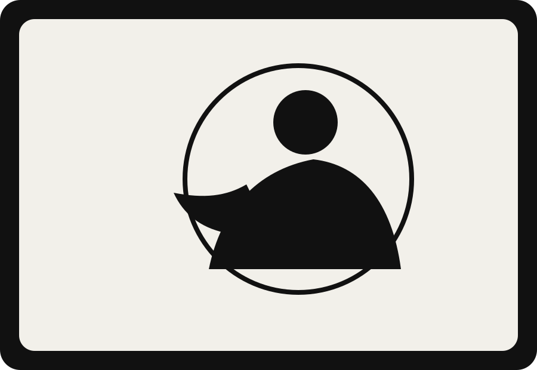

01
CAMS VR Medical Simulation
NAIT capstone proof of concept for immersive VR medical simulation using Unreal Engine, a digital twin facility, and AI conversation tools.
View Case Study
Gameplay Programmer · Unity · Unreal Engine
I build gameplay systems, prototypes, and worlds. My work focuses on Unity, Unreal Engine, VR, save systems, multiplayer foundations, and turning game ideas into playable experiences.

Featured Work
01
NAIT capstone proof of concept for immersive VR medical simulation using Unreal Engine, a digital twin facility, and AI conversation tools.
View Case Study02
A multiplayer cryptid horror vertical slice built in Unity, focused on evidence gathering, survival, and self-taught multiplayer systems.
View Case Study
03
A racing prototype with saved player profiles, best times, leaderboards, and ghost car playback.
View Case Study
I like building the systems behind the experience: the save data, interaction flow, gameplay logic, multiplayer setup, and small details that make a project feel complete.
Technical Focus